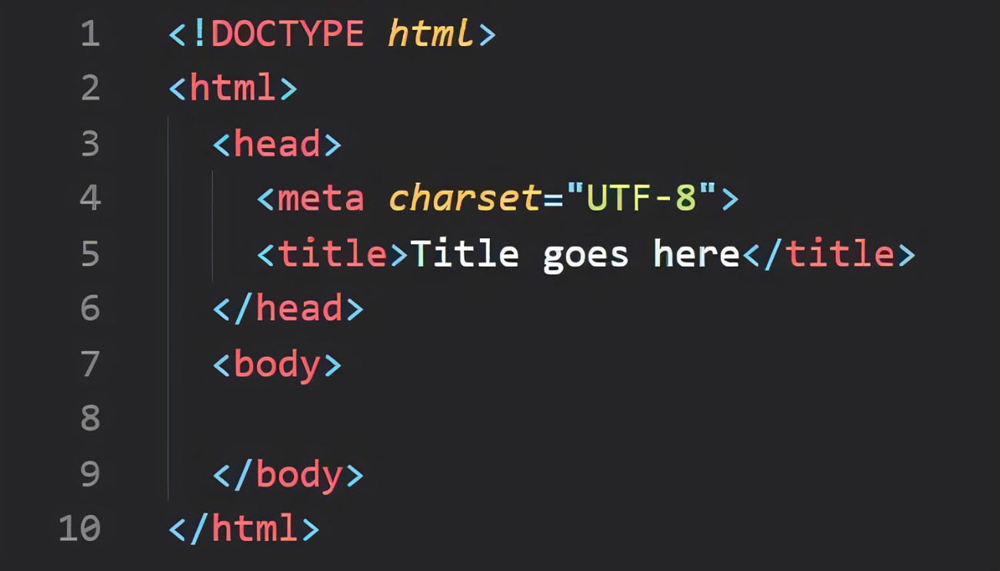

Introduction to HTML
HTML is the language that is used widely to write web pages. It stands for Hyper-Text Markup Language. Any link available on web pages is generally called Hypertext, and mark-up refers to a tag or pages structure such that listed documents in webpages could be seen in a structured format. The intent to develop HTML was to understand the structure of any documents: heading, body, inner contents, or paragraphs. So, basically, HTML provides a structural format to display the contents of web pages. It is very simple and easy to understand. In the early nineties, it was developed by Tim Berners-Lee and later went through many changes and moderation.
When the html code is opened in the browser, it looks like as shown below:
Main Components of HTML
- It is already said that HTML is a markup language that can use multiple tags to format the content. All of the tags are enclosed within the angular braces <tagname>. Except for a few tags, most of the tags start with angular braces and closed with corresponding angular braces.
- <!DocType Html> defines the document type and version of the Html. Html code start just after <html> angular tag and ends with </html> which could be seen from above screenshot.
- It generally has 2 major sections, which are head and body. Each section has its own pertained elements and requirements.
Advantages and Disadvantages of HTML
Advantages are:
- HTML is a platform Independent.
- It is widely and globally accepted.
- Every browser supports HTML.
- It is easy to learn, use and modify.
- It is by default available in all of the browsers, so no need to purchase and install.
- Html is very useful for beginners in the web designing field.
- It supports a wide range of colors, formats, and layouts.
- It uses templates which makes the website design easier.
- FrontPage, Dreamweaver, and multiple development tools support HTML.
- Html is the most search engine-friendly.
Disadvantages are:
- Html is used to create only plain or static pages. If one wants dynamic pages, then HTML is not useful. So, Html cannot use for dynamic output.
- Sometimes, the structuring of HTML is very difficult to grasp.
- Multiple lines of code are required to make a simple website.
- If one needs to write multiple code lines for simpler things, it increases the complexity and takes more time.
- Its error is costly because one small typo error could lead to the non-functioning of web pages.
- Html can be used for the first authentication step on the web, but it's not robust. So, Security features are not good in Html, and it provides only limited security.
- To better present web pages along with Html, other languages like CSS need to be learned.